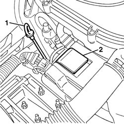

1084A10 ENGINE OIL - Check level and top up, if necessary
- Path
- Procedures > 10 ENGINE > 1084 ENGINE LUBRICATION > 1084A indicators/check devices > 1084A10 ENGINE OIL - Check level and top up, if necessary
- Kind
- repair procedure (removal / refitting; the operation number is the code)
- Applies to
- all engines; all production periods
- Interactive page
- https://sloeber94.github.io/elrnDB-fDbl/en/#/2584285
Applies to: all engines; all production periods
1. Using the dipstick, check that the engine oil level is between the MIN and MAX marks on the dipstick.
2. If necessary, top up the level introducing the recommended oil after having removed the cap.
 | Type | Component | Name | Qty. |
|---|---|---|---|---|
- | Oil | ENGINE LUBRICATION CIRCUIT | SELENIA 20K | - |
For the optimum operation of the engine in particularly harsh climatic conditions (starting at temperatures as low as -35° C), use the recommended oil for the engine lubrication circuit.
| Type | Component | Name | Qty. |
|---|---|---|---|---|
- | Oil | ENGINE LUBRICATION CIRCUIT | SELENIA PERFORMER | - |

Applies to: all engines; all production periods
Fit the cap.
Start the engine and leave it to idle for a few seconds, then wait a few minutes after switching it off.
Check the level of the oil once again, then replace the dipstick.